Além de ser um sucessor espiritual de Demon's Souls, foi o marco inicial da franquia e um sucesso estrondoso. Ambientado no decadente reino de Lordran e é por conhecidos por muitos como o Souls com o melhor level design, devido a sua interconexão. Recebeu um remaster em 2018 chamado Dark Souls Remastered.
Veja sobre Dark Souls II ▼O segundo título da série foi lançado após o sucesso do primeiro jogo e trouxe mecânicas inovadoras como o power stance, com o tempo se tornou um jogo criticado pela sua base de fãs por uma série de motivos. Recebeu uma versão definitiva que incluía as DLCs, lançada em 2015.
Veja sobre Dark Souls III ▼
A conclusão da franquia, com combate rápido, gameplay mais linear e história com foco no encerramento do ciclo do fogo, com muitas pessoas o considerando o melhor jogo da trilogia. No mesmo ano de seu lançamento, recebeu uma DLC chamada Ashes of Ariandel e no ano seguinte recebeu sua última DLC: The Ringed City.
Voltar a tela inicial ▼ Voltar ao site inicial ▼